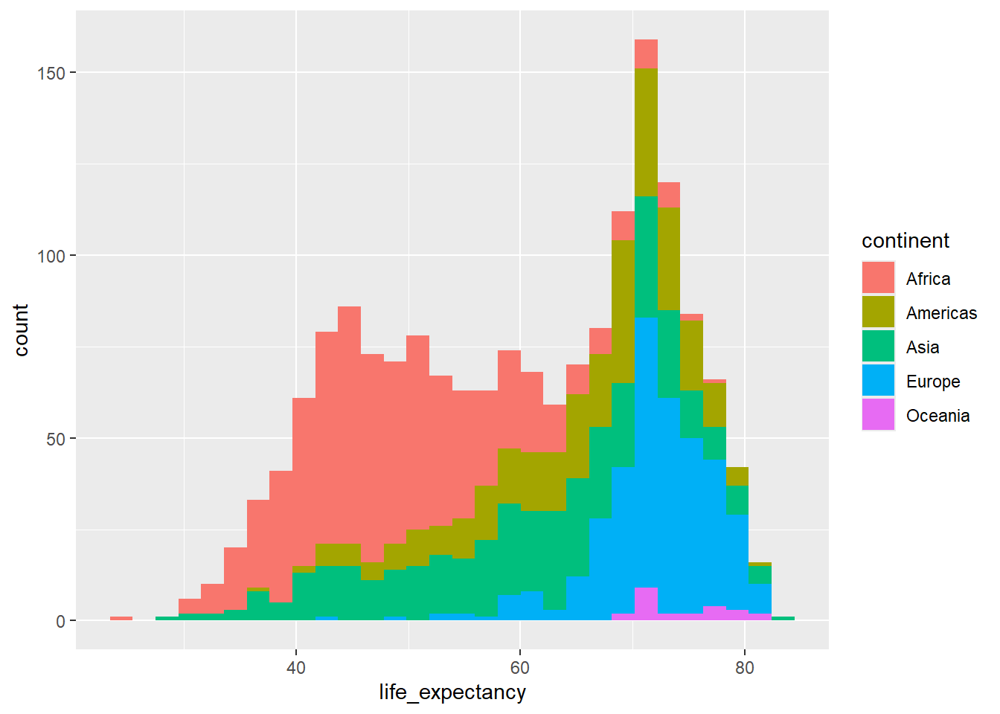
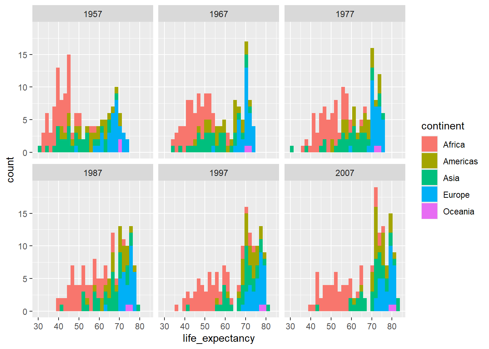

── Conflicts ────────────────────────────────────────── tidyverse_conflicts() ──
✖ dplyr::filter() masks stats::filter()
✖ dplyr::lag() masks stats::lag()
ℹ Use the conflicted package (<http://conflicted.r-lib.org/>) to force all conflicts to become errors
Introduction
In this workshop we will carry out some visualisation using ggplot2.
I recommend typing each part of the example code below into an R script and running it, rather than copying and pasting. This help you internalise the process a little better and understand what is happening at each step.
Feel free to experiment and change bits of the code. This is the best way to learn.
Getting started
Begin by opening Rstudio and create a project for this workshop (or use one you have already created for this course).
We will need to install some additional packages for this exercise. We will start by installing the tidyverse set of packages. Although there are many tidyverse packages, including tidyr, dplyr, and ggplot2, which we could install individually, it is easier to use the ‘tidyverse’ package
install.packages("tidyverse")library(tidyverse)
The documentation for ggplot2 is available online here if you need to access it.
Remember that you can always access the help for any R function if you need to by typing ? and the name of the function into the console.
?geom_point
Reading and Tidying
On the course blackboard page, you will find the three .csv files. Download these files in a folder within your project named data [^1]. [1:] All of this data is repurposed from the gapminder package.
We can load one of these in using the read_csv function:
gdp_df <-read_csv("data/gdp_pc.csv")gdp_df
Rows: 142 Columns: 14
── Column specification ────────────────────────────────────────────────────────
Delimiter: ","
chr (2): country, continent
dbl (12): 1952, 1957, 1962, 1967, 1972, 1977, 1982, 1987, 1992, 1997, 2002, ...
ℹ Use `spec()` to retrieve the full column specification for this data.
ℹ Specify the column types or set `show_col_types = FALSE` to quiet this message.
We can see that this data is not in ‘tidy’ format.
The columns ‘1952’,‘1957’, …, etc give each provide different sets of observations of the same variable (GDP per capita).
Therefore, we would like to convert this plot to tidy format using the pivot_longer function from the tidyr package.
gdp_tidy_df <- gdp_df %>%# select all columns except country and continentpivot_longer(-c(country, continent),names_to="year",values_to="gdp_per_cap")gdp_tidy_df
# A tibble: 1,704 × 4
country continent year gdp_per_cap
<chr> <chr> <chr> <dbl>
1 Afghanistan Asia 1952 779.
2 Afghanistan Asia 1957 821.
3 Afghanistan Asia 1962 853.
4 Afghanistan Asia 1967 836.
5 Afghanistan Asia 1972 740.
6 Afghanistan Asia 1977 786.
7 Afghanistan Asia 1982 978.
8 Afghanistan Asia 1987 852.
9 Afghanistan Asia 1992 649.
10 Afghanistan Asia 1997 635.
# ℹ 1,694 more rows
Filter, Group by, Summarise
We can filter, compute summaries, and create new columns in the data by using functions from the dplyr package.
We can, for instance, calculate the mean gdp per capita.
We might like to find out the number of observations in each group.
We can subset the data to find a specific year.
gdp_tidy_df %>%# choose only those rows where the condition year==max(year) holds# (i.e. the latest year)filter(year==max(year)) %>%# arrange in order of gdp per capita, # in descending order (without the `-`, we would have smallest first) arrange(-gdp_per_cap)
# A tibble: 142 × 4
country continent year gdp_per_cap
<chr> <chr> <chr> <dbl>
1 Norway Europe 2007 49357.
2 Kuwait Asia 2007 47307.
3 Singapore Asia 2007 47143.
4 United States Americas 2007 42952.
5 Ireland Europe 2007 40676.
6 Hong Kong, China Asia 2007 39725.
7 Switzerland Europe 2007 37506.
8 Netherlands Europe 2007 36798.
9 Canada Americas 2007 36319.
10 Iceland Europe 2007 36181.
# ℹ 132 more rows
We will calculate mean gdp by continent[^1], so will use the group_by function to create groups based on the continent column. Any subsequent calculations we carry out on that data frame will be conducted separately for each group, as though we were working on separate dataframes.
gdp_tidy_df %>%group_by(continent)
# A tibble: 1,704 × 4
# Groups: continent [5]
country continent year gdp_per_cap
<chr> <chr> <chr> <dbl>
1 Afghanistan Asia 1952 779.
2 Afghanistan Asia 1957 821.
3 Afghanistan Asia 1962 853.
4 Afghanistan Asia 1967 836.
5 Afghanistan Asia 1972 740.
6 Afghanistan Asia 1977 786.
7 Afghanistan Asia 1982 978.
8 Afghanistan Asia 1987 852.
9 Afghanistan Asia 1992 649.
10 Afghanistan Asia 1997 635.
# ℹ 1,694 more rows
We can see the groups are indicated in the information printed at the top of the dataframe.
# A tibble: 5 × 2
continent mean_gdp_per_cap
<chr> <dbl>
1 Africa 2194.
2 Americas 7136.
3 Asia 7902.
4 Europe 14469.
5 Oceania 18622.
We can also choose a different variable to group on. Try doing this by year, for example.
Joining
In fact, these values are not very meaningful. We should really be accounting for differences in population size between the countries we are averaging over.
Therefore, we need to load in data on population. As above, try to read in the data on population and covert to tidy format, and store in dataframe called pop_tidy_df.
Rows: 142 Columns: 14
── Column specification ────────────────────────────────────────────────────────
Delimiter: ","
chr (2): country, continent
dbl (12): 1952, 1957, 1962, 1967, 1972, 1977, 1982, 1987, 1992, 1997, 2002, ...
ℹ Use `spec()` to retrieve the full column specification for this data.
ℹ Specify the column types or set `show_col_types = FALSE` to quiet this message.
# A tibble: 1,704 × 4
country continent year population
<chr> <chr> <chr> <dbl>
1 Afghanistan Asia 1952 8425333
2 Afghanistan Asia 1957 9240934
3 Afghanistan Asia 1962 10267083
4 Afghanistan Asia 1967 11537966
5 Afghanistan Asia 1972 13079460
6 Afghanistan Asia 1977 14880372
7 Afghanistan Asia 1982 12881816
8 Afghanistan Asia 1987 13867957
9 Afghanistan Asia 1992 16317921
10 Afghanistan Asia 1997 22227415
# ℹ 1,694 more rows
We would like to combine this with the data on gdp.
We can do this using the join functions from dplyr.
Joining with `by = join_by(country, continent, year)`
country_df
# A tibble: 1,704 × 5
country continent year gdp_per_cap population
<chr> <chr> <chr> <dbl> <dbl>
1 Afghanistan Asia 1952 779. 8425333
2 Afghanistan Asia 1957 821. 9240934
3 Afghanistan Asia 1962 853. 10267083
4 Afghanistan Asia 1967 836. 11537966
5 Afghanistan Asia 1972 740. 13079460
6 Afghanistan Asia 1977 786. 14880372
7 Afghanistan Asia 1982 978. 12881816
8 Afghanistan Asia 1987 852. 13867957
9 Afghanistan Asia 1992 649. 16317921
10 Afghanistan Asia 1997 635. 22227415
# ℹ 1,694 more rows
This function looks for columns common to both datasets, and looks for rows in each dataset with the same values in these common columns by which to join the dataset together.
Look at the simple example below to understand the result of a join operation. Notice that the correct customer age and sex is matched the relevant row of the transaction dataset. In the case of John, there is no customer data, so an NA value is inserted. Note also that it doesn’t matter whether the datasets are in the same order or have the same number of rows.
# A tibble: 3 × 3
Customer Age Sex
<chr> <dbl> <chr>
1 Liying 34 f
2 Jill 54 f
3 Omar 65 m
transaction_df %>%left_join(customer_df)
Joining with `by = join_by(Customer)`
# A tibble: 5 × 5
Transaction Customer Amount Age Sex
<dbl> <chr> <dbl> <dbl> <chr>
1 1 John 24 NA <NA>
2 2 Jill 54 54 f
3 3 Omar 65.4 65 m
4 4 Liying 5 34 f
5 5 Omar 0.3 65 m
Mutating
Back to the gdp data, lets calculate average gdp per capita by continent for the latest year in a more correct manner.
country_df %>%filter(year==max(year)) %>%# creating a new columnmutate(gdp = gdp_per_cap * population) %>%group_by(continent) %>%summarise(total_gdp=sum(gdp),total_pop=sum(population)) %>%mutate(mean_gdp = total_gdp/total_pop)
# A tibble: 5 × 4
continent total_gdp total_pop mean_gdp
<chr> <dbl> <dbl> <dbl>
1 Africa 2.38e12 929539692 2561.
2 Americas 1.94e13 898871184 21603.
3 Asia 2.07e13 3811953827 5432.
4 Europe 1.48e13 586098529 25244.
5 Oceania 8.07e11 24549947 32885.
Visualisation
Next, read in the third .csv dataset provided, and join this to the other two, so that we have gdp, population and life expectancy data together in one data frame called country_df.
Rows: 142 Columns: 14
── Column specification ────────────────────────────────────────────────────────
Delimiter: ","
chr (2): country, continent
dbl (12): 1952, 1957, 1962, 1967, 1972, 1977, 1982, 1987, 1992, 1997, 2002, ...
ℹ Use `spec()` to retrieve the full column specification for this data.
ℹ Specify the column types or set `show_col_types = FALSE` to quiet this message.
Joining with `by = join_by(country, continent, year)`
# A tibble: 1,704 × 6
country continent year gdp_per_cap population life_expectancy
<chr> <chr> <chr> <dbl> <dbl> <dbl>
1 Afghanistan Asia 1952 779. 8425333 28.8
2 Afghanistan Asia 1957 821. 9240934 30.3
3 Afghanistan Asia 1962 853. 10267083 32.0
4 Afghanistan Asia 1967 836. 11537966 34.0
5 Afghanistan Asia 1972 740. 13079460 36.1
6 Afghanistan Asia 1977 786. 14880372 38.4
7 Afghanistan Asia 1982 978. 12881816 39.9
8 Afghanistan Asia 1987 852. 13867957 40.8
9 Afghanistan Asia 1992 649. 16317921 41.7
10 Afghanistan Asia 1997 635. 22227415 41.8
# ℹ 1,694 more rows
Let’s start by building up a plot. First we initialise a plot and choose the dataset we wish to use:
ggplot(data= country_df)
This just creates a blank plot. This is because we have not specified any mappings from data dimensions to aesthetics, nor have we stated the geometric object we want to represent the data on the screen.
Let’s decide that we will map some of the variables in our dataset to position aesthetics. We will map GDP to the x aesthetic, and life expectancy to the y aesthetic. By specifying these at the plot initialisation stage, we have determine that we want this to apply to all future layers.
We can now see that be specifying the mappings, ggplot knows enough about what we intend to draw the axes.
We have still to determine what the physical representations of our data will look like. We do this by creating a new layer with a specific geometry. We will use a point as the representation of each observation in our dataset.
Note the differences in the labels along the x-axis. - The first and second solution keeps the data the same, but uses log-scaling to translate this to distance along the x axis. - The third solution transforms the original data, and then translates this transformed data to distance in the x-direction using a linear scaling.
Question 2
Colour each continent separately using the colour aesthetic
Plot histograms of the continuous variables. Experiment with examining the distributions of these variables separately by year.
Note that ggplot2 has a geom_histogram geometry that allows histograms to be created easily, mapping the continuous variable of interest to the x aesthetic. Technically speaking, this is actually a combination of a transformation of the variable into binned counts, and the use of a bar geometry, but the histogram geometry is a useful shorthand for this.
`stat_bin()` using `bins = 30`. Pick better value with `binwidth`.

Note the difference between fill and colour in the above!
Position This works by using the position argument to the geometry, which we haven’t yet discussed. - The point of this attribute to geom is to avoid overplotting - Most of the time position will be set to identity - Looking at the position argument to geom_histogram (try ?geom_histogram), we notice that we it is set to stack by default. - This means bars in different groups with the same x value are translated to lie on top of one another.
`stat_bin()` using `bins = 30`. Pick better value with `binwidth`.

We can compare more directly between continents using facet_grid, allowings us to split out facets by two cateogries, one in rows, and one in columns. But the individual plots are now quite small.
`stat_bin()` using `bins = 30`. Pick better value with `binwidth`.
Question 5
Label your plots with titles and more appropriate axis names. Try a different theme, and adjust the base theme
Solution
p <-ggplot(country_df %>%filter(year %in%seq(1967,2008, 20)), aes(x=gdp_per_cap, y=life_expectancy, colour=continent)) +geom_point() +scale_x_log10(labels=function(x) round(x/1000)) +facet_wrap(~year) +theme_bw(base_size =20) +labs(title="GDP per Capita vs Life Expectancy by Year",x="GDP per Capita (000s)")print(p)
Question 6
Save one of your plots out to a png using ggsave.
Use the help function to get familiar with how to use ggsave. The examples section of the bottom of the help page can be particularly useful.